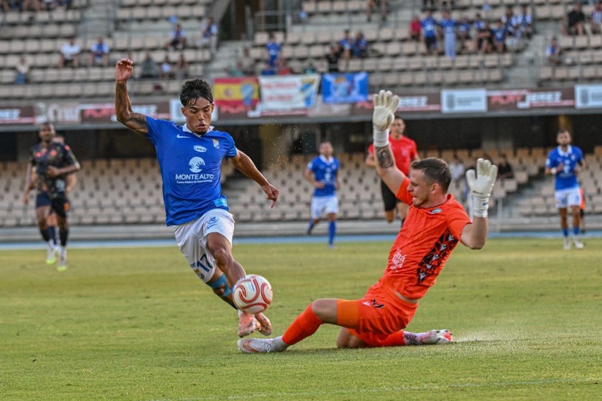
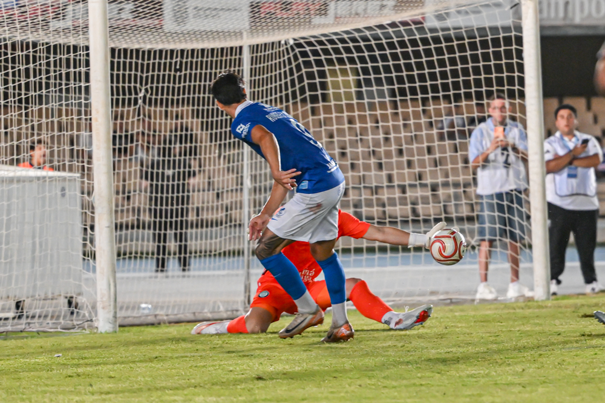

Xerez win and impress
 Xerez CD
Xerez CD
Photo: Diario XerecistaChapín hosts the 11th Rafa Verdú Trophy, with a Zelu goal before half-time deciding a match that was more about the feelings than the result
In pre-season the team's progress matters more than the scoreline, and that is the key to reading Xerez CD's win over Juventud Torremolinos, a side from a higher division who start their league campaign next weekend. The 1-0 final score, courtesy of Zelu, confirmed a step forward from the display a few days earlier against Real Jaén, with a particularly inspired Jaime Fernández and with the added bonus of former Xerez player Charaf watching from the stands.
Molist starts to find his team
The blue-and-white coach set the team up from the start with a back three, the big tactical novelty of the afternoon, and also brought back Felipe Chacartegui, now recovered from his muscle problems, on the left flank. The back line was made up of Manu Galán, Josete and Moi, with Jaime Fernández as right wing-back, the position from which he produced one of his best performances of the pre-season. In midfield, the absence of Isma Gutiérrez — who suffered a strain without a tear and is a doubt for the league opener — opened the door for Bittor Isuskiza, who partnered Raúl López; a midfield that worked far better than in previous outings, with far fewer turnovers in the build-up and much cleaner circulation from the back. Jaime López pushed further forward and Zelu appeared more on the left, while up front Rubén Mesa started again, continuing to clock up minutes in the absence of Chuma and Saúl Romero.
Among the crowd at Chapín was former Xerez player Charaf, who closely followed the progress of a team that, with the new back-three set-up, looked considerably more organised and solid than in the previous friendly against Real Jaén.
A heart-stopping start and a Xerez side that grew into the game
The match was not even thirty seconds old when Torremolinos fired a warning after a Xerez turnover: Pau Pérez set up Pinchi on the edge of the area and only a good save from Marcos Alconchel, winning the one-on-one, prevented the first scare.
As the minutes passed, however, the script changed completely. Isuskiza started a press that ended with the ball being won inside the Torremolinos area and a golden chance for Jaime López, who shot with everything in his favour only to be denied by a good response from Javi Cuenca. Shortly after, a well-worked team move between Isuskiza, Rubén Mesa and Jaime López again forced the visiting goalkeeper into action. Jaime López himself, very involved, tried again with a header from a Chacartegui cross and with a long-range shot after again winning the ball off Kaptoum. At the other end, Torremolinos had their best chance when the Cameroonian, a former Betis player, sent wide a ball that had everything in his favour.
Zelu's goal before half-time
Xerez grew in possession, always looking to play out cleanly from the back, with Zelu constantly appearing between the lines while Chacartegui and Jaime Fernández provided width on the flanks. Their persistence was rewarded towards the end of the first half: a long ball from Manu Galán beat the offside trap for Zelu to find himself alone in the area and finish with class, chipping the ball beside Javi Cuenca's right-hand post. A goal that reflected the blue-and-whites' dominance in that spell of the match.

Photo: Diario XerecistaJaime Fernández, a cut above
If one name stands out from the afternoon at Chapín, it is Jaime Fernández. The blue-and-white wing-back was one of the most decisive players in the match, providing constant width down the right and creating danger every time he took on the Torremolinos defence. His was one of the most eye-catching moves of the first half, when he forced Javi Cuenca into a stretching save after a good combination with Isuskiza and Rubén Mesa, and he also came close to scoring with an effort the Costa del Sol keeper managed to turn away. His dribbling and his runs from deep were one of the main attacking outlets for a Xerez side that, thanks in part to his work, found space in attack more easily.
A dominant second half without further reward
After the break, Xerez stuck to the script. Alconchel was decisive again to keep out a dangerous shot from the edge of the area, and Molist's side had several chances to extend the lead: an effort from Jaime López, who could not control a long pass from Josete, a shot from Javi Mérida that went just past the post at the other end, and further saves from Javi Cuenca to deny Rubén Mesa and Isuskiza, who could not beat the Costa del Sol keeper on the rebound either.
With both teams' substitutes already on the pitch, the match entered an end-to-end final stretch, with Torremolinos looking for an equaliser and Xerez trying to put the game to bed. A late chance for Óscar Lorenzo, which went wide, could have wrapped things up, but the 1-0 held until the end.
Good feelings ahead of the league opener
Beyond the result, Xerez CD leave this trophy having shown a solid image: greater defensive organisation with the back three from the first minute, a much sharper midfield with far fewer turnovers in the build-up thanks to Isuskiza and Raúl López, and a Jaime Fernández who, together with Jaime López and Zelu, emerged as one of the standout and most in-form players ahead of the start of the official competition.
Match facts
Xerez CD: Marcos Alconchel; Manu Galán (Guille Campos, 70'), Moi, Josete; Chacartegui (Salas, 60'), Raúl López (Ganfornina, 80'), Isuskiza (Fali, 70'), Jaime López (Mario Peregrina, 70'); Jaime Fernández (Zequi, 70'), Zelu (Óscar Lorenzo, 70') and Rubén Mesa.
Juventud Torremolinos: Javi Cuenca; Mati, Mérida, Climent; Pau Pérez (Andrés, 72'), Dioni (Buch, 60'), Nico Njalla (Lucas, 60'), Kaptoum (Manu Sánchez, 72'); Pinchi (Iwe, 46'), Petersson (Héctor, 60') and Grozdanic.
Goal: 1-0 (44') Zelu.
Referee: Alberto Sevillano Marín.
Notes: Match in the 11th Rafa Verdú Trophy, played at Chapín on a pitch in poor condition.
🇪🇸 Leer en español ← Back to home